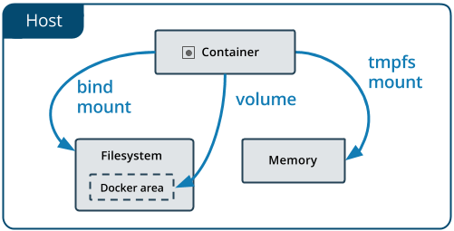

Lab 3 - Managing Data in Containers¶
Overview¶
By default all files created inside a container are stored on a writable container layer. That means that:
- If the container no longer exists, the data is lost,
- The container's writable layer is tightly coupled to the host machine, and
- To manage the file system, you need a storage driver that provides a union file system, using the Linux kernel. This extra abstraction reduces performance compared to
data volumeswhich write directly to the filesystem.
Docker provides two options to store files in the host machine: volumes and bind mounts. If you're running Docker on Linux, you can also use a tmpfs mount, and with Docker on Windows you can also use a named pipe.

Volumesare stored in the host filesystem that is managed by Docker.Bind mountsare stored anywhere on the host system.tmpfs mountsare stored in the host memory only.
Originally, the --mount flag was used for Docker Swarm services and the --volume flag was used for standalone containers. From Docker 17.06 and higher, you can also use --mount for standalone containers and it is in general more explicit and verbose than --volume.
Volumes¶
A data volume or volume is a directory that bypasses the Union File System of Docker.
There are three types of volumes:
- anonymous volume,
- named volume, and
- host volume.
Anonymous Volume¶
Let's create an instance of a popular open source NoSQL database called CouchDB and use an anonymous volume to store the data files for the database.
To run an instance of CouchDB, use the CouchDB image from Docker Hub at https://hub.docker.com/_/couchdb. The docs say that the default for CouchDB is to write the database files to disk on the host system using its own internal volume management.
Run the following command,
docker run -d -p 5984:5984 --name my-couchdb -e COUCHDB_USER=admin -e COUCHDB_PASSWORD=passw0rd1 couchdb:3.1
CouchDB will create an anonymous volume and generated a hashed name. Check the volumes on your host system,
$ docker volume ls
DRIVER VOLUME NAME
local f543c5319ebd96b7701dc1f2d915f21b095dfb35adbb8dc851630e098d526a50
Set an environment variable VOLUME with the value of the generated name,
export VOLUME=f543c5319ebd96b7701dc1f2d915f21b095dfb35adbb8dc851630e098d526a50
And inspect the volume that was created, use the hash name that was generated for the volume,
$ docker volume inspect $VOLUME
[
{
"CreatedAt": "2020-09-24T14:10:07Z",
"Driver": "local",
"Labels": null,
"Mountpoint": "/var/lib/docker/volumes/f543c5319ebd96b7701dc1f2d915f21b095dfb35adbb8dc851630e098d526a50/_data",
"Name": "f543c5319ebd96b7701dc1f2d915f21b095dfb35adbb8dc851630e098d526a50",
"Options": null,
"Scope": "local"
}
]
You see that Docker has created and manages a volume in the Docker host filesystem under /var/lib/docker/volumes/$VOLUME_NAME/_data. Note that this is not a path on the host machine, but a part of the Docker managed filesystem.
Create a new database mydb and insert a new document with a hello world message.
curl -X PUT -u admin:passw0rd1 http://127.0.0.1:5984/mydb
curl -X PUT -u admin:passw0rd1 http://127.0.0.1:5984/mydb/1 -d '{"msg": "hello world"}'
Stop the container and start the container again,
docker stop my-couchdb
docker start my-couchdb
Retrieve the document in the database to test that the data was persisted,
$ curl -X GET -u admin:passw0rd1 http://127.0.0.1:5984/mydb/_all_docs
{"total_rows":1,"offset":0,"rows":[
{"id":"1","key":"1","value":{"rev":"1-c09289617e06b96bc747fb1201fea7f1"}}
]}
$ curl -X GET -u admin:passw0rd1 http://127.0.0.1:5984/mydb/1
{"_id":"1","_rev":"1-c09289617e06b96bc747fb1201fea7f1","msg":"hello world"}
Sharing Volumes¶
You can share an anonymous volume with another container by using the --volumes-from option.
Create a busybox container with an anonymous volume mounted to a directory /data in the container, and using shell commands, write a message to a log file.
$ docker run -it --name busybox1 -v /data busybox sh
/ # echo "hello from busybox1" > /data/hi.log
/ # ls /data
hi.log
/ # exit
Make sure the container busybox1 is stopped but not removed.
$ docker ps -a
CONTAINER ID IMAGE COMMAND CREATED STATUS PORTS NAMES
437fb4a271c1 busybox "sh" 18 seconds ago Exited (0) 4 seconds ago busybox1
Then create a second busybox container named busybox2 using the --volumes-from option to share the volume created by busybox1,
$ docker run --rm -it --name busybox2 --volumes-from busybox1 busybox sh
/ # ls -al /data
/ # cat /data/hi.log
hello from busybox1
/ # exit
Docker created the anynomous volume that you were able to share using the --volumes-from option, and created a new anonymous volume.
$ docker volume ls
DRIVER VOLUME NAME
local 83a3275e889506f3e8ff12cd50f7d5b501c1ace95672334597f9a071df439493
local f4e6b9f9568eeb165a56b2946847035414f5f9c2cad9ff79f18e800277ae1ebd
Cleanup the existing volumes and container.
docker stop my-couchdb
docker rm my-couchdb
docker rm busybox1
docker volume rm $(docker volume ls -q)
docker system prune -a
clear
Named Volume¶
A named volume and anonymous volume are similar in that Docker manages where they are located. However, a named volume can be referenced by name when mounting it to a container directory. This is helpful if you want to share a volume across multiple containers.
First, create a named volume,
docker volume create my-couchdb-data-volume
Verify the volume was created,
$ docker volume ls
DRIVER VOLUME NAME
local my-couchdb-data-volume
Now create the CouchDB container using the named volume,
docker run -d -p 5984:5984 --name my-couchdb -v my-couchdb-data-volume:/opt/couchdb/data -e COUCHDB_USER=admin -e COUCHDB_PASSWORD=passw0rd1 couchdb:3.1
Wait until the CouchDB container is running and the instance is available.
Create a new database mydb and insert a new document with a hello world message.
curl -X PUT -u admin:passw0rd1 http://127.0.0.1:5984/mydb
curl -X PUT -u admin:passw0rd1 http://127.0.0.1:5984/mydb/1 -d '{"msg": "hello world"}'
It now is easy to share the volume with another container. For instance, read the content of the volume using the busybox image, and share the my-couchdb-data-volume volume by mounting the volume to a directory in the busybox container.
$ docker run --rm -it --name busybox -v my-couchdb-data-volume:/myvolume busybox sh
/ # ls -al /myvolume/
total 40
drwxr-xr-x 4 5984 5984 4096 Sep 24 17:11 .
drwxr-xr-x 1 root root 4096 Sep 24 17:14 ..
drwxr-xr-x 2 5984 5984 4096 Sep 24 17:11 .delete
-rw-r--r-- 1 5984 5984 8388 Sep 24 17:11 _dbs.couch
-rw-r--r-- 1 5984 5984 8385 Sep 24 17:11 _nodes.couch
drwxr-xr-x 4 5984 5984 4096 Sep 24 17:11 shards
/ # exit
You can check the Docker managed filesystem for volumes by running a busybox container with privileged permission and set the process id to host to inspect the host system, and browse to the Docker managed directories.
docker run -it --privileged --pid=host busybox nsenter -t 1 -m -u -n -i sh
/ # ls -l /var/lib/docker/volumes
total 28
-rw------- 1 root root 32768 Nov 10 15:54 metadata.db
drwxr-xr-x 3 root root 4096 Nov 10 15:54 my-couchdb-data-volume
/ # exit
Cleanup,
docker stop my-couchdb
docker rm my-couchdb
docker volume rm my-couchdb-data-volume
docker system prune -a
docker volume prune
clear
Host Volume¶
When you want to access the volume directory easily from the host machine directly instead of using the Docker managed directories, you can create a host volume.
Let's use a directory in the current working directory (indicated with the command pwd) called data, or choose your own data directory on the host machine, e.g. /home/couchdb/data. We let docker create the $(pwd)/data directory if it does not exist yet. We mount the host volume inside the CouchDB container to the container directory /opt/couchdb/data, which is the default data directory for CouchDB.
Run the following command,
docker run -d -p 5984:5984 --name my-couchdb -v $(pwd)/data:/opt/couchdb/data -e COUCHDB_USER=admin -e COUCHDB_PASSWORD=passw0rd1 couchdb:3.1
Verify that a directory data was created,
$ ls -al
total 16
drwxrwsrwx 3 root users 4096 Sep 24 16:27 .
drwxrwxr-x 1 root root 4096 Jul 16 20:04 ..
drwxr-sr-x 3 5984 5984 4096 Sep 24 16:27 data
and that CouchDB has created data files here,
$ ls -al data
total 32
drwxr-sr-x 3 5984 5984 4096 Sep 24 16:27 .
drwxrwsrwx 3 root users 4096 Sep 24 16:27 ..
-rw-r--r-- 1 5984 5984 4257 Sep 24 16:27 _dbs.couch
drwxr-sr-x 2 5984 5984 4096 Sep 24 16:27 .delete
-rw-r--r-- 1 5984 5984 8385 Sep 24 16:27 _nodes.couch
Also check that now, no managed volume was created by docker, because we are now using a host volume.
docker volume ls
and
docker run -it --privileged --pid=host busybox nsenter -t 1 -m -u -n -i sh
/ # ls -l /var/lib/docker/volumes
total 24
-rw------- 1 root root 32768 Nov 10 16:00 metadata.db
/ # exit
Create a new database mydb and insert a new document with a hello world message.
curl -X PUT -u admin:passw0rd1 http://127.0.0.1:5984/mydb
curl -X PUT -u admin:passw0rd1 http://127.0.0.1:5984/mydb/1 -d '{"msg": "hello world"}'
Note that CouchDB created a folder shards,
$ ls -al data
total 40
drwxr-sr-x 4 5984 5984 4096 Sep 24 16:49 .
drwxrwsrwx 3 root users 4096 Sep 24 16:49 ..
-rw-r--r-- 1 5984 5984 8388 Sep 24 16:49 _dbs.couch
drwxr-sr-x 2 5984 5984 4096 Sep 24 16:49 .delete
-rw-r--r-- 1 5984 5984 8385 Sep 24 16:49 _nodes.couch
drwxr-sr-x 4 5984 5984 4096 Sep 24 16:49 shards
List the content of the shards directory,
$ ls -al data/shards
total 16
drwxr-sr-x 4 5984 5984 4096 Sep 24 16:49 .
drwxr-sr-x 4 5984 5984 4096 Sep 24 16:49 ..
drwxr-sr-x 2 5984 5984 4096 Sep 24 16:49 00000000-7fffffff
drwxr-sr-x 2 5984 5984 4096 Sep 24 16:49 80000000-ffffffff
and the first shard,
$ ls -al data/shards/00000000-7fffffff/
total 20
drwxr-sr-x 2 5984 5984 4096 Sep 24 16:49 .
drwxr-sr-x 4 5984 5984 4096 Sep 24 16:49 ..
-rw-r--r-- 1 5984 5984 8346 Sep 24 16:49 mydb.1600966173.couch
A shard is a horizontal partition of data in a database. Partitioning data into shards and distributing copies of each shard to different nodes in a cluster gives the data greater durability against node loss. CouchDB automatically shards databases and distributes the subsets of documents among nodes.
Cleanup,
docker stop my-couchdb
docker rm my-couchdb
sudo rm -rf $(pwd)/data
docker system prune -a
Bind Mounts¶
The mount syntax is recommended by Docker over the volume syntax. Bind mounts have limited functionality compared to volumes. A file or directory is referenced by its full path on the host machine when mounted into a container. Bind mounts rely on the host machine’s filesystem having a specific directory structure available and you cannot use the Docker CLI to manage bind mounts. Note that bind mounts can change the host filesystem via processes running in a container.
Instead of using the -v syntax with three fields separated by colon separator (:), the mount syntax is more verbose and uses multiple key-value pairs:
- type: bind, volume or tmpfs,
- source: path to the file or directory on host machine,
- destination: path in container,
- readonly,
- bind-propagation: rprivate, private, rshared, shared, rslave, slave,
- consistency: consistent, delegated, cached,
- mount.
mkdir data
docker run -it --name busybox --mount type=bind,source="$(pwd)"/data,target=/data busybox sh
/ # echo "hello busybox" > /data/hi.txt
/ # exit
cat data/hi.txt
[Optional] OverlayFS¶
OverlayFS is a union mount filesystem implementation for Linux. To understand what a Docker volume is, it helps to understand how layers and the filesystem work in Docker.
To start a container, Docker takes the read-only image and creates a new read-write layer on top. To view the layers as one, Docker uses a Union File System or OverlayFS (Overlay File System), specifically the overlay2 storage driver.
To see Docker host managed files, you need access to the Docker process file system. Using the --privileged and --pid=host flags you can access the host's process ID namespace from inside a container like busybox. You can then browse to Docker's /var/lib/docker/overlay2 directory to see the downloaded layers that are managed by Docker.
To view the current list of layers in Docker,
$ docker run -it --privileged --pid=host busybox nsenter -t 1 -m -u -n -i sh
/ # ls -l /var/lib/docker/overlay2
total 16
drwx------ 3 root root 4096 Sep 25 19:44 0e55ecaa4d17c353191e68022d9a17fde64fb5e9217b07b5c56eb4c74dad5b32
drwx------ 5 root root 4096 Sep 25 19:44 187854d05ccd18980642e820b0d2be6a127ba85d8ed96315bb5ae37eb1add36d
drwx------ 4 root root 4096 Sep 25 19:44 187854d05ccd18980642e820b0d2be6a127ba85d8ed96315bb5ae37eb1add36d-init
drwx------ 2 root root 4096 Sep 25 19:44 l
/ # exit
Pull down the ubuntu image and check again,
$ docker pull ubuntu
Using default tag: latest
latest: Pulling from library/ubuntu
e6ca3592b144: Pull complete
534a5505201d: Pull complete
990916bd23bb: Pull complete
Digest: sha256:cbcf86d7781dbb3a6aa2bcea25403f6b0b443e20b9959165cf52d2cc9608e4b9
Status: Downloaded newer image for ubuntu:latest
$ docker run -it --privileged --pid=host busybox nsenter -t 1 -m -u -n -i sh
/ # ls -l /var/lib/docker/overlay2/
total 36
drwx------ 3 root root 4096 Sep 25 19:44 0e55ecaa4d17c353191e68022d9a17fde64fb5e9217b07b5c56eb4c74dad5b32
drwx------ 4 root root 4096 Sep 25 19:45 187854d05ccd18980642e820b0d2be6a127ba85d8ed96315bb5ae37eb1add36d
drwx------ 4 root root 4096 Sep 25 19:44 187854d05ccd18980642e820b0d2be6a127ba85d8ed96315bb5ae37eb1add36d-init
drwx------ 4 root root 4096 Sep 25 19:46 a611792b4cac502995fa88a888261dfba0b5d852e72f9db9e075050991423779
drwx------ 3 root root 4096 Sep 25 19:46 d181f1a41fc35a45c16e8bfcb8eee6f768f3b98f82210a43ea65f284a45fcd65
drwx------ 4 root root 4096 Sep 25 19:46 dac2f37f6280a076836d39b87b0ae5ebf5c0d386b6d8b991b103aadbcebaa7c6
drwx------ 5 root root 4096 Sep 25 19:47 f3e921b440c37c86d06cd9c9fb70df50edad553c36cc87f84d5eeba734aae709
drwx------ 4 root root 4096 Sep 25 19:47 f3e921b440c37c86d06cd9c9fb70df50edad553c36cc87f84d5eeba734aae709-init
drwx------ 2 root root 4096 Sep 25 19:47 l
/ # exit
You see that pulling down the ubuntu image, implicitly pulled down 4 new layers,
- a611792b4cac502995fa88a888261dfba0b5d852e72f9db9e075050991423779
- d181f1a41fc35a45c16e8bfcb8eee6f768f3b98f82210a43ea65f284a45fcd65
- dac2f37f6280a076836d39b87b0ae5ebf5c0d386b6d8b991b103aadbcebaa7c6
- f3e921b440c37c86d06cd9c9fb70df50edad553c36cc87f84d5eeba734aae709
The overlay2 storage driver in essence layers different directories on the host and presents them as a single directory.
- base layer or lowerdir,
difflayer or upperdir,- overlay layer (user view), and
workdir.
OverlayFS refers to the lower directories as lowerdir, which contains the base image and the read-only (R/O) layers that are pulled down.
The upper directory is called upperdir and is the read-write (R/W) container layer.
The unified view or overlay layer is called merged.
Finally, a workdir is a required, which is an empty directory used by overlay for internal use.
The overlay2 driver supports up to 128 lower OverlayFS layers. The l directory contains shortened layer identifiers as symbolic links.

Cleanup,
docker system prune -a
clear